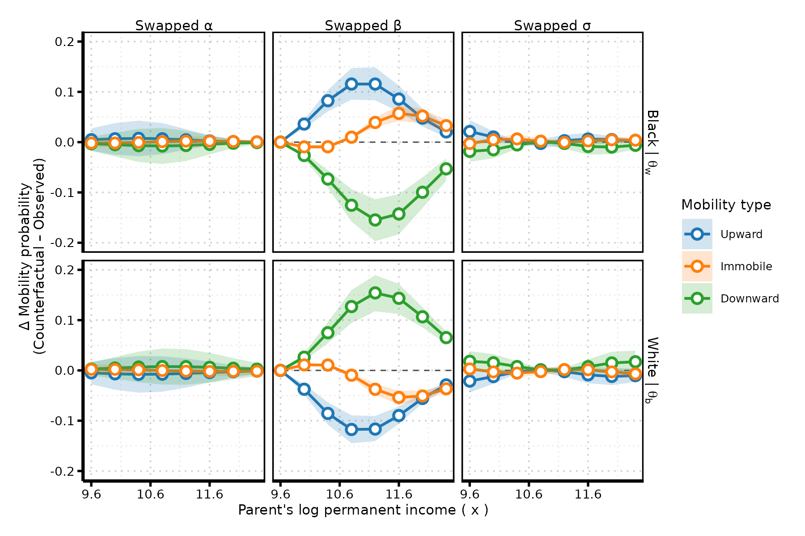
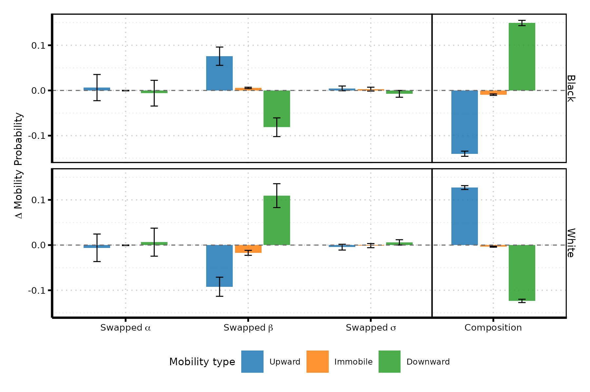

why do some groups experience greater mobility than others?
a simple framework and decomposition method
linking absolute and relative intergenerational mobility
puc chile
the problem
context
social mobility is a central theme in public discussions about fairness, opportunity, and the “rules of the game.”
framed—alongside wealth, poverty, and inequality—as a defining marker of a society’s character (e.g., “the land of opportunity”).
commonly invoked as a public good: metaphors like “the social elevator” or a “level playing field” signal that rising should be attainable for all.
context

the problem
social mobility means different things in public debate and academic research
two core concepts are often conflated:
- relative mobility: how tightly children’s positions track their parents’
- absolute mobility: where children end up compared with their parents (in levels)
- so what counts as “good” or “bad” mobility? seems straightforward enough…
- weaker parent-child associations → more “equality of opportunity”
- more people surpassing their parents → more upward mobility
- but not so fast!: these two mobility types can move in opposite directions and have different consequences for individuals within the same society.


two ways this story could be true:
the bus driver’s son ends up owning the bus company, while the doctor’s son winds up driving the bus (rank reversal)
the bus driver’s son owns the bus company, and the doctor’s son owns the clinic (upward mobility for both)
this paper
core claim: properly understanding mobility requires examining both types simultaneously. This paper introduces a unified framework that:
builds on the standard IGE workhorse model to formally links absolute and relative mobility as joint outcomes of the same intergenerational income–generation process.
treats upward, downward, and immobile outcomes (i.e., absolute mobility) as probabilistic results of four mechanisms —one of which is relative mobility itself.
provides simple closed-form expressions showing how each mechanism shapes absolute-mobility probabilities.
offers a methods to decompose group differences in absolute mobility (between countries, subpopulations, time periods, etc.) into the contribution of each mechanism.
analytical framework
definitions
Relative mobility captures how tightly children’s economic standing tracks their parents’.
Represented by the conditional distribution
\(f(y \mid x)\), where \(x\) is parental income and \(y\) is child income.Stronger dependence → lower relative mobility.
Weaker dependence → higher relative mobility.
The standard model is the IGE workhorse: \(E[y \mid x] = \alpha + \beta x\)
where \(x\) is parents’ permanent log income and \(y\) is children’s log income.
The slope \(\beta\) is the intergenerational elasticity (IGE), typically in the 0.2–0.6 range.
- Population-level concept: non-directional and essentially a zero-sum measure of positional movement.
definitions
absolute mobility compares children’s income to their parents on a level scale, not a rank or positional scale.
With a meaningful threshold \(\delta\), classify mobility using the gap \(y - x\):
- Upward mobility: \(y > x + \delta\)
- Downward mobility: \(y < x - \delta\)
- Immobility: \(x - \delta \le y \le x + \delta\)
- Upward mobility: \(y > x + \delta\)
- Individual-level outcome: directional — everyone can, in principle, move up, move down, or stay roughly the same.
linking relative and absolute mobility
standard IGE specification:
\[y_i \mid x_i \sim \text{Normal}\!\big(\mu_i = \alpha + \beta x_i,\; \sigma \big)\]
four key components:
| parameter | interpretation |
|---|---|
| \(\alpha\) | income floor — expected income for children from bottom of distribution |
| \(\beta\) | persistence (IGE) — degree of relative immobility |
| \(\sigma\) | uncertainty — unpredictability in intergenerational transmission |
| \(x\) | parental income — the baseline for absolute comparison |
note: can be extended so both expected income \(\mu_i(x)\) and income uncertainty \(\sigma(x)\) vary with parental income
linking relative and absolute mobility

absolute mobility probabilities:
\[ \begin{aligned} \Pr(M^{\uparrow}) &= \Pr(y - x > \delta \mid x) && \text{(upward mobility)} \\ \Pr(M^{\downarrow}) &= \Pr(y - x < -\delta \mid x) && \text{(downward mobility)} \\ \Pr(M^{0}) &= 1 - \big[ \Pr(M^{\uparrow}) + \Pr(M^{\downarrow}) \big] && \text{(immobility)} \end{aligned} \]
linking relative and absolute mobility
we can express absolute mobility probabilities as a function of the IGE components:
- step 1: start with the income generation model: \(y \mid x \sim \text{Normal}\big(\mu(x) = \alpha + \beta x,\; \sigma(x)\big)\)
- step 2: standardized mobility thresholds
\[ \begin{aligned} z^{\uparrow} &= \frac{x + \delta - (\alpha + \beta x)}{\sigma(x)} = \frac{(1-\beta)x + \delta - \alpha}{\sigma(x)} \\ z^{\downarrow} &= \frac{x - \delta - (\alpha + \beta x)}{\sigma(x)} = \frac{(1-\beta)x - \delta - \alpha}{\sigma(x)} \end{aligned} \]
- step 3: express absolute mobility probabilities using standard normal CDF \(\Phi(\cdot)\)
\[ \begin{aligned} \Pr(M^{\uparrow}) &= 1 - \Phi(z^{\uparrow}) \\ \Pr(M^{\downarrow}) &= \Phi(z^{\downarrow}) \\ \Pr(M^{0}) &= \Phi(z^{\uparrow}) - \Phi(z^{\downarrow}) \end{aligned} \]
drivers of absolute mobility
driver 1: income floor (\(\alpha\))
question: how do intercept shifts (uniform income growth) affect absolute mobility?
analytical result:
\[ \frac{\partial \Pr(M^{\uparrow})}{\partial \alpha} = \frac{\phi(z^{\uparrow})}{\sigma}, \qquad \frac{\partial \Pr(M^{\downarrow})}{\partial \alpha} = -\frac{\phi(z^{\downarrow})}{\sigma} \]
where \(\phi(\cdot)\) is the standard normal PDF
key insights:
- raising \(\alpha\) shifts the entire income distribution upward
- increases upward mobility, decreases downward mobility
- effect is uniform across the parental income distribution
driver 2: relative (im)mobility (\(\beta\))
question: how do changes in relative mobility affect absolute mobility?
analytical result:
\[ \frac{\partial \Pr(M^{\uparrow})}{\partial \beta} = \frac{x \cdot \phi(z^{\uparrow})}{\sigma}, \qquad \frac{\partial \Pr(M^{\downarrow})}{\partial \beta} = -\frac{x \cdot \phi(z^{\downarrow})}{\sigma} \]
key insights:
- effect of \(\beta\) is proportional to parental income \(x\): higher-origin families experience larger shifts
- increasing \(\beta\) (more persistence) has two sign-definite effects:
- increases upward mobility probability
- decreases downward mobility probability
- larger conditional income uncertainty \(\sigma\) dilutes the impact of \(\beta\)
driver 3: income uncertainty (\(\sigma\))
question: how does the “predictability” of children’s income affect absolute mobility?
analytical result:
\[ \frac{\partial \Pr(M^{\uparrow})}{\partial \sigma} = \frac{z^{\uparrow} \phi(z^{\uparrow})}{\sigma}, \qquad \frac{\partial \Pr(M^{\downarrow})}{\partial \sigma} = -\frac{z^{\downarrow} \phi(z^{\downarrow})}{\sigma} \]
key insights:
- effect depends on distance to thresholds (\(z^{\uparrow}\), \(z^{\downarrow}\))
- at the bottom: increases upward mobility (lottery-ticket effect)
- at the top: increases downward mobility (greater vulnerability)
driver 4: parental income (\(x\))
question: how do social origins (parental income) affect absolute mobility?
analytical result:
\[ \frac{\partial \Pr(M^{\uparrow})}{\partial x} = \frac{\beta - 1}{\sigma} \phi(z^{\uparrow}), \qquad \frac{\partial \Pr(M^{\downarrow})}{\partial x} = \frac{1 - \beta}{\sigma} \phi(z^{\downarrow}) \]
key insights:
- since empirically \(0 < \beta < 1\) :
- upward mobility decreases with parental income \(x\)
- downward mobility increases with parental income \(x\)
- even under fixed persistence, mobility varies substantially by origin
- origin effects are structural, not just compositional
counterfactual decomposition
the parameter-swap counterfactual
goal: isolate the marginal contribution of each structural parameter to group differences
challenge: the effect of any single parameter depends on the levels of all others
solution: replace one parameter with its counterfactual value while holding others fixe. For groups \(g\) and \(\bar{g}\), I do three swaps:
- \(\alpha\)-swap: plug in \(\alpha_{\bar{g}}\) in place of \(\alpha_g\)
- \(\beta\)-swap: plug in \(\beta_{\bar{g}}\) in place of \(\beta_g\)
- \(\sigma\)-swap: plug in \(\sigma_{\bar{g}}(x)\) in place of \(\sigma_g(x)\)
example question: “how much upward mobility would group A experience if, holding everything else constant, it had group B’s level of relative mobility?”
pointwise effect at income \(x\): \(\Delta^{(g,\theta)}_k(x) = \widetilde{\Pr}^{(g,\theta)}(M^k \mid x) - \Pr^{(g)}(M^k \mid x)\)
aggregation and composition
population-level consequences depend on the distribution of parental origins, which may differ across groups.
aggregation — average change in probability of mobility type \(k\) when swapping parameter \(\theta\) for group \(g\), holding distribution of \(x\) fixed:
\[ \overline{\Delta}^{(g,\theta)}_k = \int \Delta^{(g,\theta)}_k(x)\, f^{(g)}(x)\, dx \]
composition — change in probability of mobility type \(k\) induced solely by swapping the parental income distribution:
\[ \overline{\Delta}^{(g,x)}_k = \int p^{(g)}_k(x)\, \big[f^{(\bar{g})}(x) - f^{(g)}(x)\big]\, dx \]
distinguishes structural transmission (via parameters) from distributional positioning (via origins)
model and estimation
statistical model
heteroskedastic IGE model:
\[ \begin{aligned} y \mid g, x &\sim \text{Normal}\big(\mu_g(x), \sigma_g(x)\big) \\ \mu_i &= \alpha_g + \beta_g x_i \\ \log(\sigma_i) &= \gamma_g + \lambda_g x_i \end{aligned} \]
bayesian estimation approach:
- hierarchical structure with group-specific parameters
- weakly informative priors reflecting empirical ranges from literature
- informative prior for \(\beta\): centered on empirically plausible range (0.3–0.6)
- full posterior uncertainty quantification
monte carlo validation
monte carlo results
it works! trust me.
empirical application
data: PSID 1968–2019
sample: 12,445 Black and White sons and daughters
- born 1952–1989
- household heads or spouses in adulthood
- at least 5 income observations at age 25+
income measures:
- labor income (wages, salaries, self-employment)
- adjusted for inflation, business cycles, age profiles
- permanent parental income: 7-year rolling average at age 42
estimated parameters: men
| parameter | black men | white men |
|---|---|---|
| \(\alpha\) | 10.36 [10.32, 10.41] | 10.38 [10.34, 10.41] |
| \(\beta\) | 0.19 [0.15, 0.22] | 0.35 [0.33, 0.37] |
| \(\gamma\) | -0.42 [-0.49, -0.34] | -0.50 [-0.56, -0.45] |
| \(\lambda\) | -0.04 [-0.10, 0.02] | 0.02 [-0.01, 0.06] |
key patterns:
- Intercepts are essentially aligned (after de-flooring \(x\) for comparability).
- Black men show much lower intergenerational persistence (\(\beta \approx 0.19\) vs. \(0.35\)).
- Black men experience greater income volatility across the distribution.
mobility profiles by race

substantive interpretation
black men face “perverse openness” (Blau & Duncan 1967):
- upward mobility from low origins is possible but gains are modest, uncertain, less transmissible.
- rapid regression toward relatively low mean
white men experience tighter coupling:
- stronger and more certain parent-child link: advantages stick, disadvantages persist
- relative disadvantage and advantage start from a higher floor.
black-white difference in mobility reflects differences in levels, transmissibility and security.
pointwise counterfactual effects

aggregation and composition

Composition effects push mobility in one direction, while slope differences pull in the opposite direction — offsetting asymmetries generate near aggregate parity.
The poorer parental origins of Black individuals mechanically raise their upward mobility rates, whereas the richer parental origins of White individuals mechanically raise their downward mobility rates.
key findings
result: similar aggregate absolute mobility from fundamentally different regimes
- black men: weaker persistence (more relative mobility) + poorer origins
- white men: stronger persistence (less relative mobility) + richer origins
contributions and implications
provides a unified framework that brings absolute and relative mobility into a single analytical structure.
shows that both forms of mobility arise from the same underlying income-generation process.
derives closed-form relationships linking the two and offers methods to disentangle their separate contributions.
demonstrates that assessing the consequences of mobility— whether it is socially desirable or not— requires considering absolute and relative mobility together.
thank you
mauricio bucca — puc chile · mebucca@uc.cl
all replication materials available